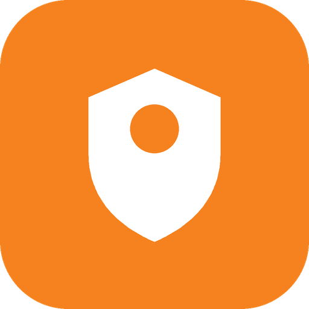

One tap sends your traffic through Cloudflare's 1.1.1.1 WARP network over WireGuard or MASQUE (HTTP/3). Auto mode finds the tunnel that actually works on school, campus, office and hotel Wi-Fi that blocks VPNs.
Free · no sign-up · no ads · source on GitHub: Android · Windows
Some networks let a VPN connect and then quietly drop all of its traffic. A campus firewall might allow the WireGuard handshake and block every data packet after it, and another network might block UDP entirely. Either way, a VPN app can show “Connected” while nothing loads. WarpGo checks that data really comes back before it says Connected. When one way of reaching Cloudflare is blocked, it tries the next one.
Tests WireGuard on ports 4500, 2408 and 500, then MASQUE over HTTP/3 and HTTP/2, and connects with the first that passes real data. It remembers what worked on each network.
Each test runs a whole tunnel in memory and waits for a DNS answer from 1.1.1.1. A handshake alone doesn't count as working.
Uses Cloudflare's free WARP service. Accounts are created automatically, with a built-in fallback for networks that block sign-up.
Both apps check GitHub for new releases, verify the SHA-256 and install the update.
| Option | What it is | Gets past |
|---|---|---|
| WireGuard · 4500 / 2408 / 500 | the classic WARP tunnel over UDP | networks that block one UDP port |
| MASQUE · HTTP/3 | WARP inside QUIC on UDP 443, which looks like web traffic | firewalls that recognise WireGuard and drop it on every port |
| MASQUE · HTTP/2 | the same over TCP 443 | networks that block UDP altogether |
Android 7.0+, 64-bit phones. One APK with no root needed. github.com/iknalos/WarpGo
Windows 10 and 11 (x64). Installer or portable exe, with a tray icon, start-with-Windows and a command line. github.com/iknalos/WarpGo-Windows
WarpGo is a free, unofficial Cloudflare WARP client for Android and Windows. It tunnels your traffic through Cloudflare's 1.1.1.1 WARP network over WireGuard or MASQUE (HTTP/3 and HTTP/2).
Yes. WarpGo is free, its source code is on GitHub, and it uses Cloudflare's free WARP service. No sign-up is needed.
It was built for networks that block VPNs. Auto mode tests each option and connects with the first that really passes data. “Test every option” shows exactly what a network allows. Please follow your network's rules.
No. WarpGo is an independent project that connects to the same WARP network. Cloudflare's own app is at one.one.one.one.
Websites see a Cloudflare IP instead of your network's, usually in or near your own country. WARP is designed for privacy and reliability, not for appearing to be somewhere else.
No. It connects only to Cloudflare (WARP servers and the sign-up API) and to GitHub (update checks). There are no analytics.
The Windows exe isn't code-signed yet, so SmartScreen warns about new downloads. Click More info → Run anyway, and compare the file with SHA256SUMS.txt on the release page.